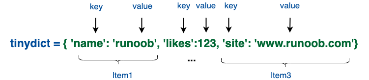

在 Python 中，可以使用 input() 函数来读取用户输入的一行内容。该函数会一直等待用户输入，直到用户按下回车键结束输入，并返回用户输入的内容作为字符串。
且input()不会读取缓冲区的换行符，为了达到分割单行数据的目的，可以用split([character])的方法来分割字符串，然后用强制类型转换处理，一个列表的字符串数据可以用
s = input()nums = [int(num) for num in s.split()]Python 中有多种字符串格式化输出的方法，包括 % 格式化、str.format() 和 f-string（3.6+）。接下来我将详细介绍这些方法及其语法。
这种方法类似于 C 语言中的 printf。基本语法是在字符串中使用 % 加上格式化字符表示占位符，然后在字符串后面使用 % 操作符和需要插入的变量。
常用的格式化字符包括：
%s：字符串%d：十进制整数%f：浮点数%x：十六进制整数%o：八进制整数例如：
xxxxxxxxxxname = "Alice"age = 30print("Hello, my name is %s and I'm %d years old." % (name, age))输出：
xxxxxxxxxxHello, my name is Alice and I'm 30 years old.
2.str.format()
这种方法使用 {} 作为占位符，将需要插入的变量传递给 format() 函数。这种方法比 % 格式化更灵活，支持更多的格式选项。
例如：
xxxxxxxxxxname = "Alice"age = 30print("Hello, my name is {} and I'm {} years old.".format(name, age))输出：
xxxxxxxxxxHello, my name is Alice and I'm 30 years old.
部分格式选项包括：
{:d}：整数{:f}：浮点数{:x}：十六进制整数{:o}：八进制整数{:0>5d}：右对齐，宽度为 5，用 0 填充的整数{:,.2f}：带千分位分隔符和两位小数的浮点数3.f-string（3.6+）
f-string 是 Python 3.6 及更高版本引入的格式化方法。它使用字符串前缀 f 或 F，并在字符串中直接插入需要格式化的变量。这种方法非常简洁，性能也更好。
例如：
xxxxxxxxxxname = "Alice"age = 30print(f"Hello, my name is {name} and I'm {age} years old.")输出：
xxxxxxxxxxHello, my name is Alice and I'm 30 years old.
部分 f-string 格式选项包括：
{value:d}：整数{value:f}：浮点数{value:x}：十六进制整数{value:o}：八进制整数{value:0>5d}：右对齐（由大于小于号<>决定对齐方向），宽度为 5，用 0 填充的整数{value:,.2f}：带千分位分隔符和两位小数的浮点数Python 中常用的 CSV 操作库是 csv，它提供了一些常用的函数和 API，下面是 csv 库中的主要函数和 API 及其用法功能：
该函数用于读取 CSV 文件中的数据，并将其返回为一个迭代器对象，每一行数据都是一个列表。其基本用法如下：
ximport csvwith open('file.csv', 'r') as f:reader = csv.reader(f)for row in reader:print(row)
其中，'file.csv' 是要读取的 CSV 文件名，'r' 表示以只读方式打开文件。csv.reader() 函数返回的对象可以用于迭代，每次迭代返回一行数据的列表。
2.csv.writer()
该函数用于将数据写入 CSV 文件中。其基本用法如下：
xxxxxxxxxximport csvwith open('file.csv', 'w', newline='') as f:writer = csv.writer(f)writer.writerow(['Name', 'Age', 'Gender'])writer.writerow(['Alice', 30, 'Female'])writer.writerow(['Bob', 25, 'Male'])
其中，'file.csv' 是要写入的 CSV 文件名，'w' 表示以写入方式打开文件。csv.writer() 函数返回的对象可以用于写入数据，使用 writerow() 方法可以将一行数据写入文件中。
在 Python 中，with 是一个关键字，通常用于管理资源，例如打开文件、建立网络连接等。
with 语句的语法结构如下：
xxxxxxxxxxwith expression [as variable]: with-block其中，expression 指代一个上下文管理器对象，通常是需要进行资源管理的对象，例如文件对象。as variable 是可选的，用于将 expression 的返回值赋值给 variable 变量。with-block 则是一个代码块，包含需要进行资源管理的代码。
使用 with 语句的好处在于可以自动管理资源的分配和释放，无需手动进行资源的打开和关闭。当 with 语句结束时，会自动调用上下文管理器对象的 __exit__ 方法，释放资源。
下面是一个打开文件并读取其中内容的例子：
xxxxxxxxxxwith open('file.txt', 'r') as f: content = f.read()print(content)在这个例子中，with 语句会自动打开文件 'file.txt'，并将文件对象赋值给变量 f。在 with 块内部，我们可以使用 f 对象读取文件内容。当 with 语句结束时，会自动关闭文件，释放资源。
需要注意的是，只有实现了上下文管理协议的对象才能用于 with 语句。Python 标准库中的许多对象都实现了上下文管理协议，例如文件对象、数据库连接对象、网络连接对象等。
（1）强制类型转换
type(variable)进行强制转换 注：数字转为字符串会直接转换而不会转为ASCII，反向转换同理
（2）字符串操作
(3)列表
在python中我们吧列表当成数组使用
一个二维数组常见的初始化方式：
xxxxxxxxxxmatrix = []for i in range(n): for j in range(k): matrix.append([int(i) for i in input().split()])| 方法 |
|---|
| list.append(obj) 在列表末尾添加新的对象 |
| list.count(obj) 统计某个元素在列表中出现的次数 |
| list.extend(seq) 在列表末尾一次性追加另一个序列中的多个值（用新列表扩展原来的列表） |
| list.index(obj) 从列表中找出某个值第一个匹配项的索引位置 |
| list.insert(index, obj) 将对象插入列表 |
| [list.pop(index=-1]) 移除列表中的一个元素（默认最后一个元素），并且返回该元素的值 |
（4）字典

xxxxxxxxxx#!/usr/bin/python3 tinydict = {'Name': 'Runoob', 'Age': 7, 'Class': 'First'} tinydict['Age'] = 8 # 更新 Agetinydict['School'] = "菜鸟教程" # 添加信息print ("tinydict['Age']: ", tinydict['Age'])print ("tinydict['School']: ", tinydict['School'])以上实例输出结果：tinydict['Age']: 8tinydict['School']: 菜鸟教程要打开一个文件，需要指定文件路径和操作模式。操作模式包括：
'r'：读取模式，用于读取文件中的数据'w'：写入模式，用于写入数据到文件中，如果文件不存在会创建一个新文件，如果文件存在会覆盖原有内容'a'：追加模式，用于在文件末尾追加数据'x'：创建模式，用于创建新文件，如果文件已经存在则会抛出异常'b'：二进制模式，用于处理二进制文件，如图片、视频等't'：文本模式，用于处理文本文件，默认模式以下是一个打开文件并读取其中的数据的示例代码：
xxxxxxxxxxwith open('file.txt', 'r') as f: data = f.read()print(data)在上面的代码中，我们使用with语句打开了一个名为file.txt的文件，并指定了操作模式为'r'（读取模式）。with语句可以保证在读取完文件后自动关闭文件，避免了资源泄漏的问题。
读取文件的数据可以使用read()方法，该方法会将整个文件的内容读取到一个字符串中。如果文件比较大，可以使用readline()方法逐行读取文件数据。
xxxxxxxxxxwith open('file.txt', 'r') as f: line = f.readline() while line: print(line) line = f.readline()上面的代码会逐行读取文件中的数据，并打印每一行的内容。
要向文件中写入数据，可以使用打开文件时指定的操作模式之一：'w'（写入模式）或者'a'（追加模式）。在写入数据之前需要先打开文件，并使用write()方法将数据写入到文件中。
下面是一个简单的示例代码，将一些文本写入到文件中：
xxxxxxxxxx# 打开文件，如果文件不存在则创建一个新文件，如果文件已经存在则覆盖原有内容with open('file.txt', 'w') as f: f.write('Hello, world!\n') f.write('This is a test file.\n') f.write('Goodbye!')在上面的代码中，我们使用open()函数打开一个名为file.txt的文件，并指定了操作模式为'w'（写入模式）。然后我们使用write()方法向文件中写入一些文本内容。注意，在写入完数据之后，一定要关闭文件，这里我们使用了with语句来自动关闭文件。
如果想要在文件末尾追加数据而不是覆盖原有内容，可以使用'a'（追加模式）来打开文件，示例代码如下：
xxxxxxxxxx# 打开文件，如果文件不存在则创建一个新文件，如果文件已经存在则在文件末尾追加数据with open('file.txt', 'a') as f: f.write('\nThis is some additional text.')在上面的代码中，我们使用'a'操作模式打开文件，然后使用write()方法向文件末尾追加一些文本数据，注意在数据末尾添加了一个换行符 \n，这是为了让新添加的数据从新的一行开始。
in 是 Python 中的一个关键字，主要用于判断一个元素是否属于一个集合（如字符串、列表、元组、字典等）。具体来说，in 关键字有以下用法：
xxxxxxxxxxstr1 = 'hello, world'if 'h' in str1: print('h is in str1') lst = [1, 2, 3, 4, 5]if 3 in lst: print('3 is in lst') tup = (1, 2, 3)if 4 not in tup: print('4 is not in tup')2.遍历一个序列类型，如字符串、列表、元组等：
xxxxxxxxxxstr1 = 'hello, world'for ch in str1: print(ch) lst = [1, 2, 3, 4, 5]for num in lst: print(num) tup = (1, 2, 3)for i in range(len(tup)): print(tup[i])3.判断一个键是否属于一个字典：
xxxxxxxxxxdict1 = {'name': 'Alice', 'age': 18}if 'name' in dict1: print('name is a key in dict1') if 'gender' not in dict1: print('gender is not a key in dict1')4.遍历一个字典的键或值：
xxxxxxxxxxdict1 = {'name': 'Alice', 'age': 18}for key in dict1: print(key) for value in dict1.values(): print(value)5.判断一个子字符串是否是另一个字符串的子串：
xxxxxxxxxxstr1 = 'hello, world'if 'world' in str1: print('world is a substring of str1')总的来说，in 关键字用于在Python中进行成员测试和迭代操作，是Python中非常常用的一个关键字。
readlines() 是 Python 中用于从文件中读取多行数据的一个方法。它会读取文件中的所有内容，并将每一行数据作为一个字符串存储在列表中。
具体来说，readlines() 方法会返回一个列表对象，其中每个元素都是文件中的一行数据，每个字符串末尾会带有一个换行符 \n，除了最后一行数据之外。示例如下：
x
with open('file.txt', 'r') as f: lines = f.readlines() for line in lines: print(line.strip()) # 去除每行数据末尾的换行符在上面的代码中，我们使用with语句打开了一个名为file.txt的文件，并指定了操作模式为'r'（读取模式）。然后我们使用readlines()方法读取文件中的所有数据，并将每一行数据存储在一个列表中。最后，我们使用一个for循环遍历这个列表，并打印每一行数据，注意使用strip()方法去除每行数据末尾的换行符。
除了readlines()方法之外，还有一个类似的方法叫做readline()，它可以逐行读取文件中的数据，每次读取一行。不同于readlines()，readline()每次只读取一行数据，可以用于处理非常大的文件，避免一次性读取整个文件造成内存占用过大的问题。
当处理较大的文本文件时，逐行读取是一种更加高效的方式。下面是一个使用readline()逐行读取文件的例子：
xxxxxxxxxxwith open('file.txt', 'r') as f: line = f.readline() while line: print(line.strip()) # 去除每行数据末尾的换行符 line = f.readline()在上面的代码中，我们使用with语句打开了一个名为file.txt的文件，并指定操作模式为'r'（读取模式）。然后我们使用readline()方法读取文件中的每一行数据，将其存储在变量line中。在一个while循环中，我们不断读取下一行数据，直到读取到最后一行数据为止。注意，在每个循环迭代中，我们使用strip()方法去除每行数据末尾的换行符。
需要注意的是，如果文件非常大，使用readline()逐行读取的效率可能会比较低，因为需要不断地从磁盘中读取数据。此时，可以考虑使用readlines()方法一次性读取所有数据并存储在一个列表中，然后在内存中处理这个列表。